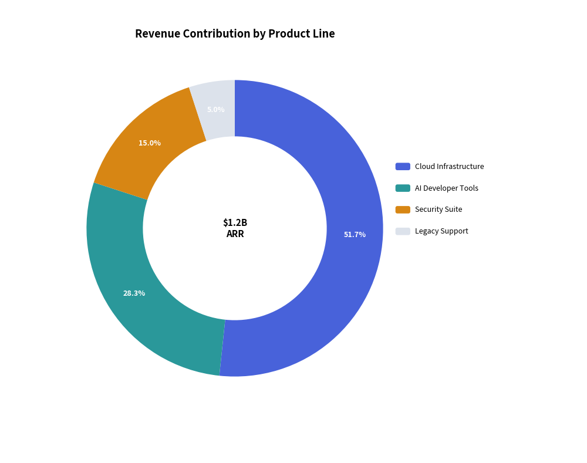
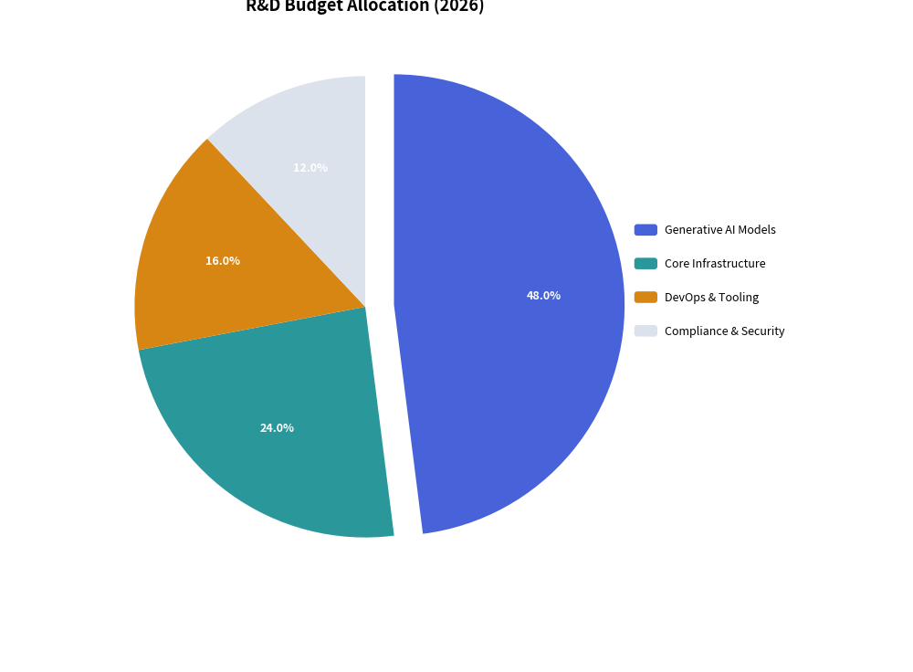

PieChart: Proportional Compositions & Donut Badges
PieChart visualizes proportional compositions where slices represent parts of a whole ($100%$). It supports classic solid pie charts, modern donut rings with center KPI badges, outward slice explosion, and decoupled legend rendering.
1. Overview & Topologies
Standard Pie Chart Donut Chart with Center KPI
12 o'clock 12 o'clock
▲ ▲
. - ~ - . . - ~ - .
. ' | ' . . ' | ' .
/ | 45% \ / ┌───────┐ \
| 35% | | | │ $1.2B │ |
| | 20% | | │ ARR │ |
\ | / \ └───────┘ /
. ' | ' . . ' | ' .
' - ~ - ' ' - ~ - '
- Solid Pie (
hole_ratio=0.0): Traditional full sector representation. - Donut Chart (
hole_ratio=0.5to0.7): Modern ring layout that provides central canvas real estate for large numeric key indicators (center_text). - Exploded Slices (
explode > 0.0): Displaces a specific wedge radially outwards from the center for visual emphasis. - Decoupled Legend: Render slice legends anywhere on the canvas via
chart.draw_legend(...).
2. Constructor & Configuration
from drawlib.charts.pie import PieChart
from drawlib.styles import Styles
chart = PieChart(
radius=26.0, # Outer radius in canvas coordinate units
hole_ratio=0.62, # Inner hole ratio (0.0 for pie, 0.6+ for donut)
center_text="$1.2B\nARR", # Center badge text (supports multiline)
center_text_style=Styles.BlackBold.patch(text_size=11.0),
title="Revenue by Product", # Top title text
title_style=Styles.BlackBold.patch(text_size=13.0),
start_angle=90.0, # Starting angle in degrees (90.0 = 12 o'clock)
clockwise=True, # Clockwise slice progression
value_text_style=Styles.WhiteBold.patch(text_size=9.0), # Percentage labels on slices
value_format="{:.1f}%", # Formatter for percentage badges
)
3. Donut Chart with Center KPI Badge
Donut charts are the preferred choice for enterprise dashboards and executive presentations.

4. Exploded Slice Allocation
Setting explode > 0.0 radially displaces a slice away from the center origin, drawing immediate focus to that wedge:
